Christmas dinner falls apart in the last hour, not in the planning. Four dishes want the oven at the same time, the roast is not resting, and nobody has set the table.
The fix is a menu built around the oven. One main, two sides, a starter and a dessert is a full table, and at least two of those should be finished the day before.
Here are 29 dishes sorted by course, each with the temperature or timing detail that matters. The rules come first, because they are what keep the day calm.
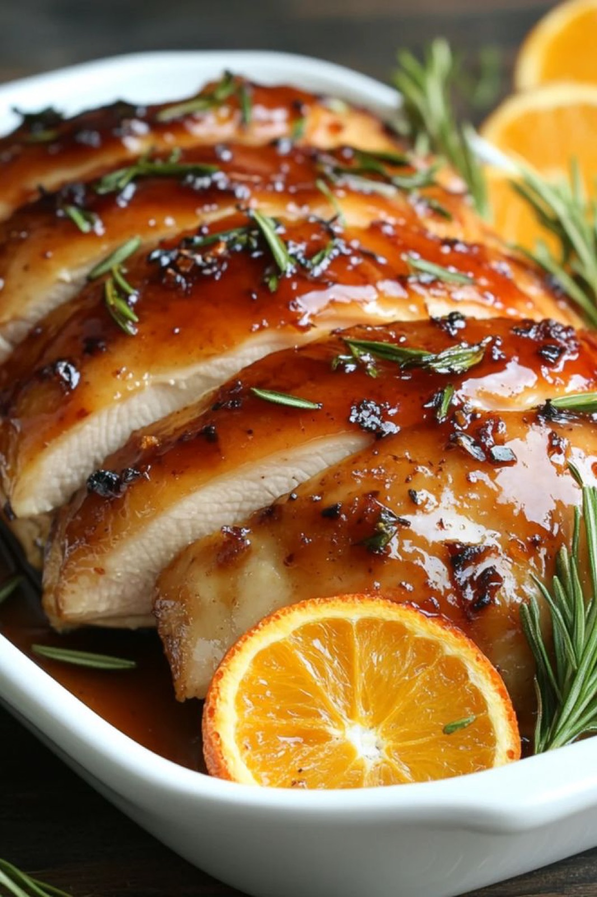
Five Rules for a Christmas Dinner That Runs on Time
- Cook to a temperature, not to a clock. Poultry comes off at 160°F and rests to 165°F, dark meat is better at 175°F, and salmon is done at 145°F. A ten-dollar instant-read thermometer settles every argument.
- Make two things the day before. Lasagna, mac and cheese, coleslaw, mousse and cheesecake all improve overnight. Pick two and your Christmas morning gets two dishes shorter.
- Give the oven a schedule. Write down what goes in at what temperature and for how long. If three dishes want 425°F and one wants 350°F, the odd one cooks first and holds.
- Rest every roast. Twenty minutes under foil keeps the juices in the meat instead of on the board, and that is twenty minutes of free oven time for the sides.
- Two hours, then the fridge. Cooked food that has sat at room temperature for more than two hours goes in the bin, not the fridge. Put leftovers away before dessert.
Starters and Finger Food
1. Build the Board From the Cheese Outward
A charcuterie board looks full when the big things go down first. Place the cheeses, then cluster the crackers and salami around them, and fill the gaps last with grapes, olives and nuts.
A tree-shaped board does the shaping for you. On a plain board, outline a tree with rosemary sprigs and fill it in, the way this one uses rosemary and sugared cranberries along the edges.
Take the cheese out of the fridge 30 minutes before guests arrive, and clear the board after two hours. Cured meat and soft cheese do not get a third hour.
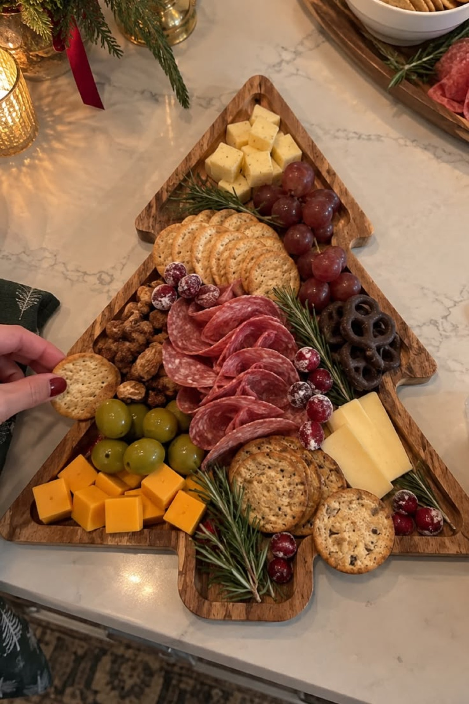
2. Keep the Pastry Cold Until the Oven Door
Puff pastry rises because of cold butter between the layers. Warm pastry gives a flat, greasy pocket, so cut and fill it straight from the fridge and work fast.
Mix shredded rotisserie chicken with cream cheese and herbs, drop a spoonful on each square, fold, and crimp the edge with a fork. Egg wash and sesame seeds give the golden top in this photo. Bake at 400°F for 20 to 25 minutes, and freeze any unbaked pockets for up to a month.
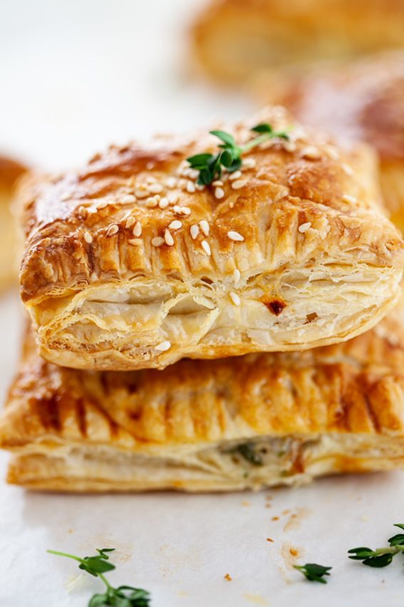
3. Roast the Caps Empty Before You Fill Them
Stuffed mushrooms go soggy for one reason. The cap releases water into the filling as it cooks.
Roast the empty caps for five minutes first, pour off the liquid, and then fill them. The stuffing stays crisp on top, as the breadcrumb crust in this photo shows.
Chop the stems and cook them with garlic and shallot, then bind with cream cheese, Parmesan and breadcrumbs. Cremini caps are the right size for one bite.
Fill them the day before and keep them covered in the fridge. Bake at 400°F for 15 minutes when the first guests arrive.
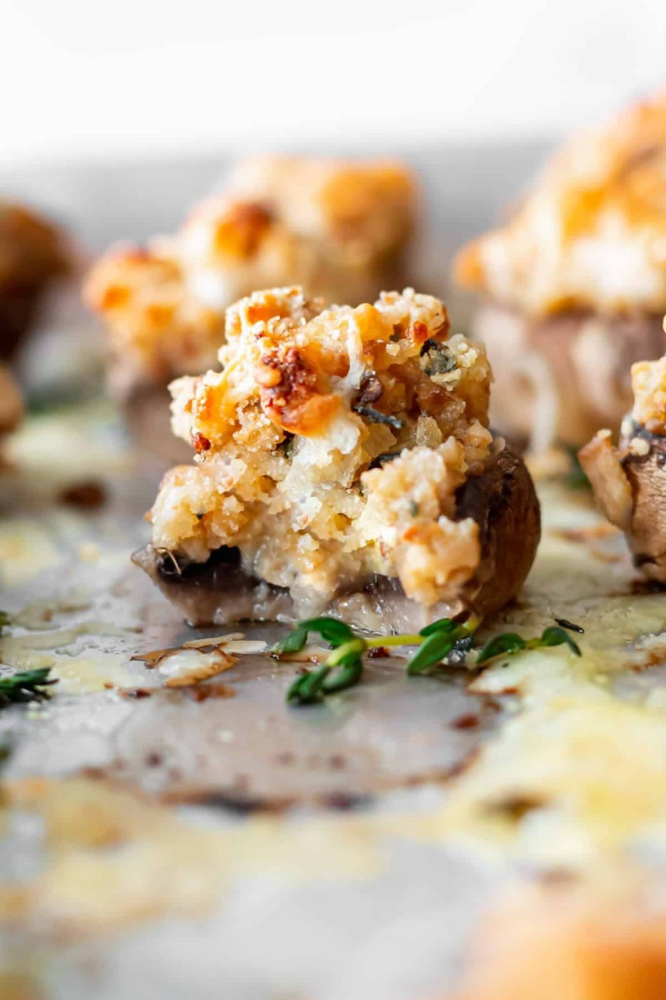
4. Use Cold Mash for Croquettes
Warm mashed potato will not hold a shape. Leftover mash from the fridge will, which makes croquettes the best use of Christmas Eve leftovers.
Stir an egg yolk, grated cheese and chives into the cold mash, roll into logs and chill two hours. Coat in flour, egg and panko, then bake at 425°F on a wire rack, turning once, so the bottoms crisp as well as the tops.
A pinch of flaky salt on each one, as in this photo, is the finishing touch. They freeze well before cooking.
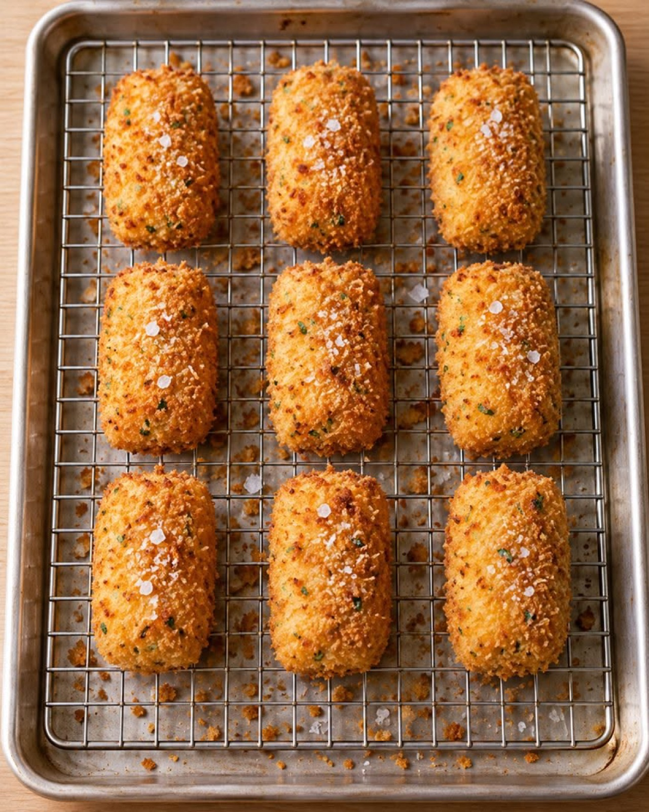
5. Sauce the Wings at the Last Second
Crisp skin starts with a dry wing. Pat them dry, toss with a teaspoon of baking powder per pound plus salt, and bake on a rack at 425°F for 40 to 45 minutes, flipping once.
Simmer honey, garlic, soy and a little butter until it thickens, and toss the wings in it only when they are about to go to the table. Sauce that sits on the skin for ten minutes turns it soft, and the glossy pile in this photo is the result of tossing and serving.
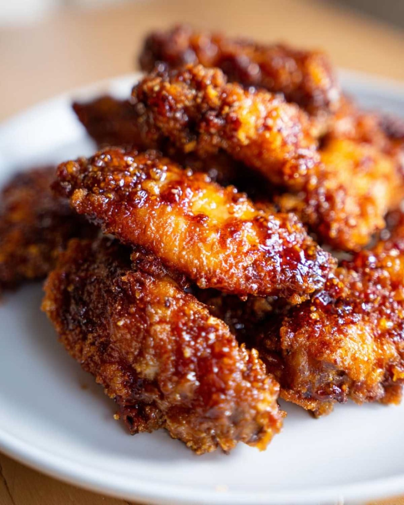
6. Freeze Mozzarella Sticks Before They Cook
The cheese leaks before the crust browns unless the sticks go in frozen. Give them at least an hour in the freezer, and the crust sets first.
Crush the crackers in a zip bag with a rolling pin until they look like coarse crumbs. Use low-moisture string cheese cut in half, and double-coat it: flour, egg, crumbs, then egg and crumbs again.
Air fry at 400°F for six to eight minutes and serve at once with warm marinara, as here. They do not reheat well, so make only what will be eaten.
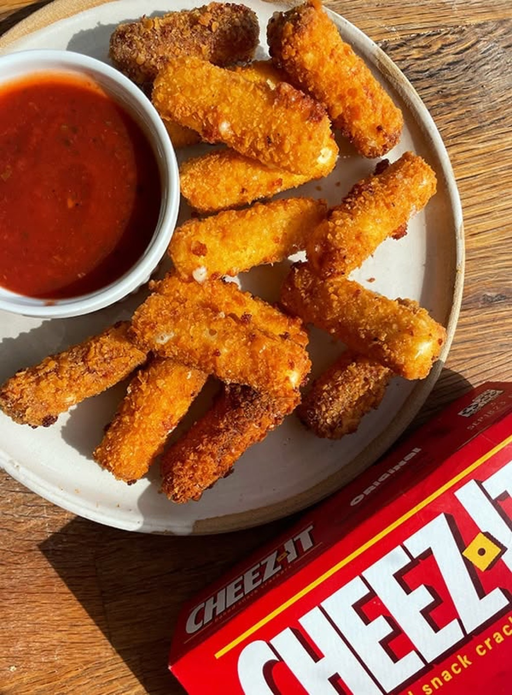
Roasts, Chicken and Fish
7. Roast a Turkey Breast Instead of a Whole Bird
A whole turkey for six people is a day of work and a week of leftovers. A bone-in breast feeds six to eight and roasts in about half the time.
Salt it under the skin the night before so the meat stays juicy. Honey scorches, so brush on the glaze of honey, orange juice, Dijon and rosemary only in the last 20 minutes.
Pull it at 160°F, tent with foil and rest 20 minutes. Carryover heat takes it to a safe 165°F, and the slices in this photo show the result: a dark glaze and pale, moist meat underneath.
Lay orange slices and rosemary on the platter, not on the bird during roasting. They burn before the glaze sets.

Silicone Basting Brush Set
Shop on Amazon8. Buy Salmon Fillets of One Thickness
Salmon is the quickest main here, 12 to 15 minutes at 400°F, but only if the fillets are the same thickness. A thin tail piece will be dry before a center cut is cooked.
Ask for center-cut fillets, pat them dry, and spoon over melted butter with garlic, lemon juice and parsley. Lay the lemon slices on top, as this dish does, not underneath, or the bottom steams instead of roasting.
The safe number is 145°F. Many cooks pull it at 130°F to 135°F for a softer center, which is a choice to make for adults, not a buffet.
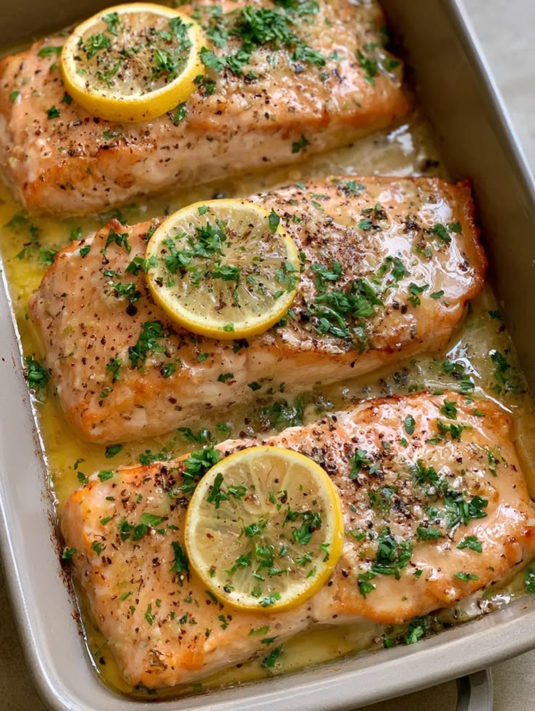
9. Sear the Roast Before It Goes in the Slow Cooker
A chuck roast is cheap, well marbled and fork-tender after eight hours on low. The one thing a slow cooker cannot do is brown it, so sear it three or four minutes a side in a hot pan first.
Add a cup of beef broth and a few smashed garlic cloves, then mash soft butter with minced garlic and parsley and spoon it over the roast just before serving, as in this photo. Garlic cooked for eight hours turns bitter. Garlic added at the end stays sweet.
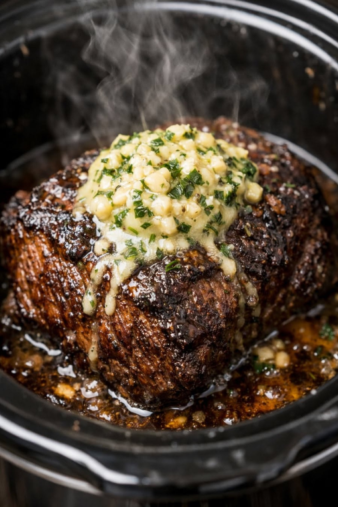
Instant-Read Meat Thermometer, 1-Second
Shop on Amazon10. Choose Thighs When You Are Cooking Five Things at Once
Chicken breasts dry out in the ten minutes you spend on the gravy. Bone-in, skin-on thighs forgive that, which makes them the safer main for a cook who is also doing everything else.
Brown them skin-side down in a cast iron skillet for six to eight minutes and do not move them until the skin releases on its own.
Pour off most of the fat, add garlic, thyme, a splash of white wine and cream, and finish in a 400°F oven until the thighs read 175°F. Dark meat is better at that temperature than at 165°F.
A spoonful of Dijon whisked into the sauce stops it tasting heavy. Serve straight from the skillet, as here.
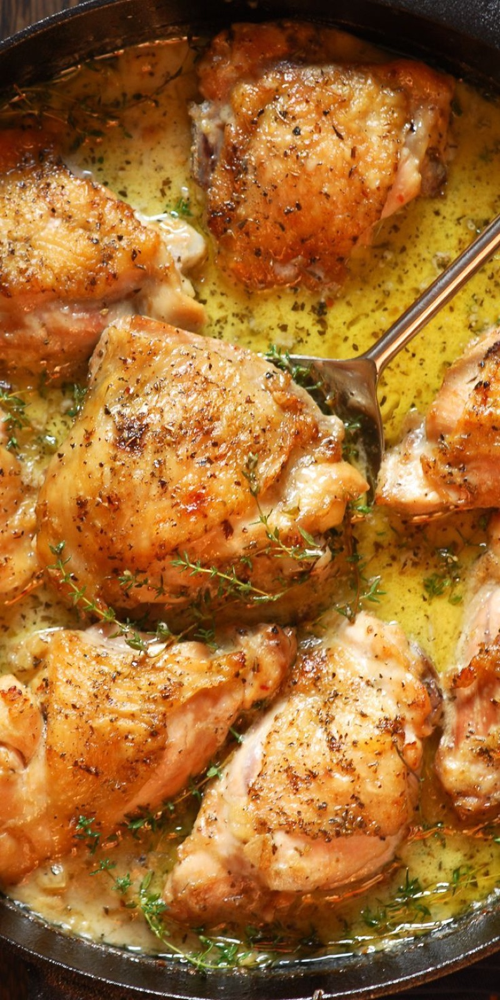
11. Keep the Filling to Two Tablespoons
Stuffed chicken bursts when it is overfilled. Two tablespoons of filling per breast is the limit, however tempting the bowl looks.
Cut a pocket along the thick side with a paring knife without going through, fill with cream cheese, cheddar, garlic and herbs, and close it with toothpicks. Sear two minutes a side, then bake at 400°F for 20 to 25 minutes to 165°F.
Rest five minutes before slicing, and the filling stays inside as it does in this photo instead of running across the plate.
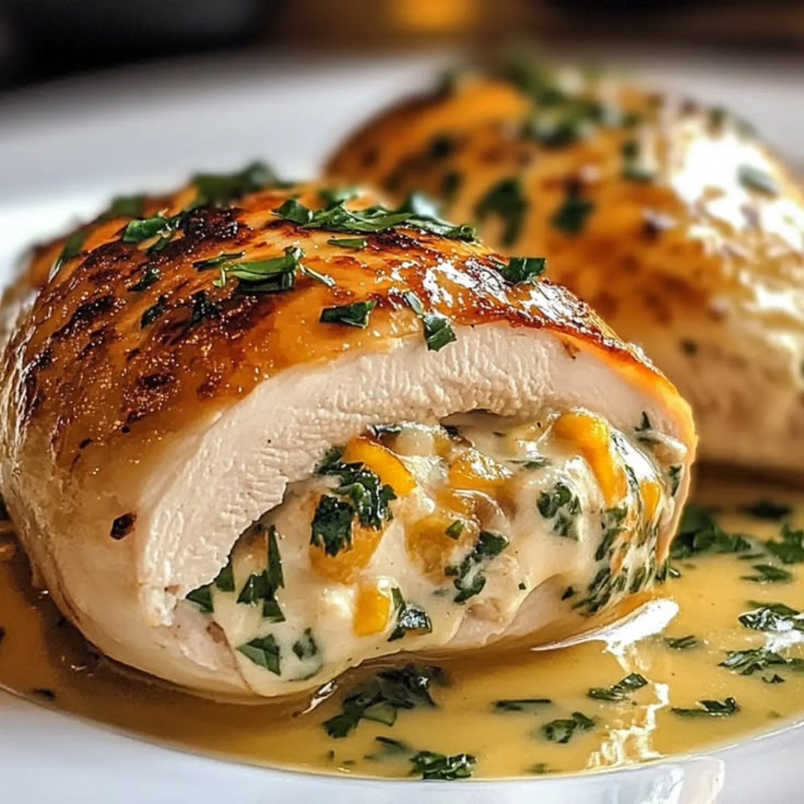
12. Pound the Breasts to Half an Inch
A thick chicken breast cooks unevenly in a pan. Slice it in half horizontally or pound it to half an inch, and it sears golden in minutes without a dry edge.
Dredge in seasoned flour, sear, set aside, then cook garlic in the same pan for 30 seconds, add broth, scrape up the browned bits, and stir in cream and Parmesan. Return the chicken to warm through, as in this stainless skillet, and serve over pasta so none of the sauce is wasted.
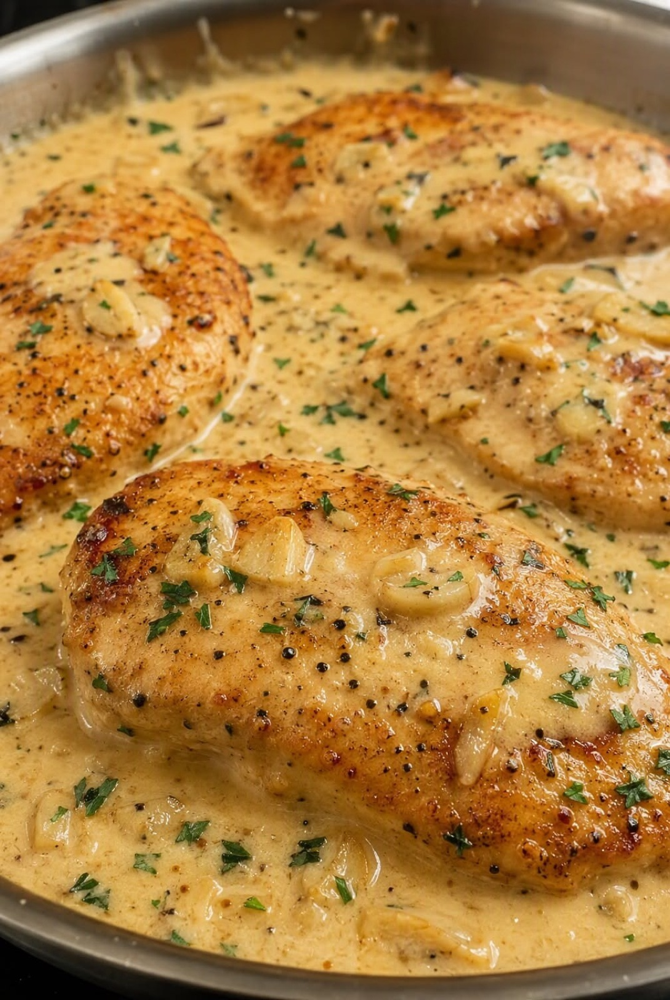
Stainless Steel Garlic Press
Shop on AmazonMains You Can Assemble the Day Before
13. Simmer the Sauce for an Hour, Then Build Thin
A lasagna is only as good as its sauce, and a sauce needs an hour at a simmer. Use half ground beef and half Italian sausage, and season the ricotta with an egg, Parmesan, parsley and a pinch of nutmeg.
Build in thin layers so the slice holds, as the clean square in this photo does. Bake covered at 375°F for 35 minutes, then uncovered for 15 to 20 more.
Assemble it the day before and keep it in the fridge. Add about ten minutes to the bake time when it goes in cold, and rest it 15 minutes before cutting.
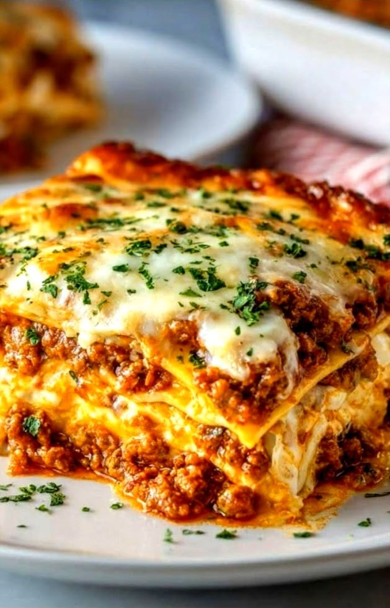
14. Cool the Filling Before It Meets the Crust
A gummy pot pie crust comes from hot filling. Cool the filling to room temperature before you lay the pastry on, and the crust bakes crisp.
Make a roux with butter and flour, whisk in broth and milk, and simmer until it coats a spoon. Only then add the shredded chicken, peas, carrots and celery.
Cut vents, brush with egg wash and bake at 400°F for 35 to 40 minutes. Rest 15 minutes so the filling sets enough to slice, as this one has.
Store-bought pie crust is fine here. Nobody tastes the difference under a thick chicken filling.
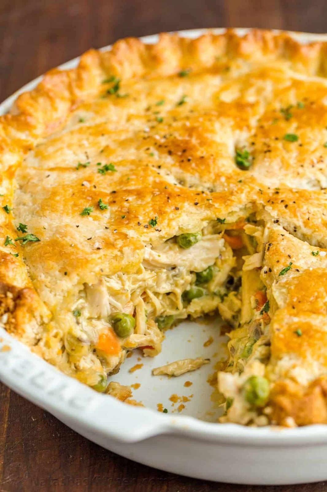
15. Grate the Cheese Yourself
Bagged shredded cheese is coated in starch to stop it clumping, and that starch makes a cheese sauce grainy. Grate a block of sharp cheddar and a block of Gruyère and the sauce stays smooth.
Make a béchamel with butter, flour and warm milk, melt the cheese in off the heat, and fold in pasta cooked two minutes short of done. Top with buttered breadcrumbs and bake at 350°F for 25 to 30 minutes until the crust browns like the one in this photo. It can be assembled a day ahead.
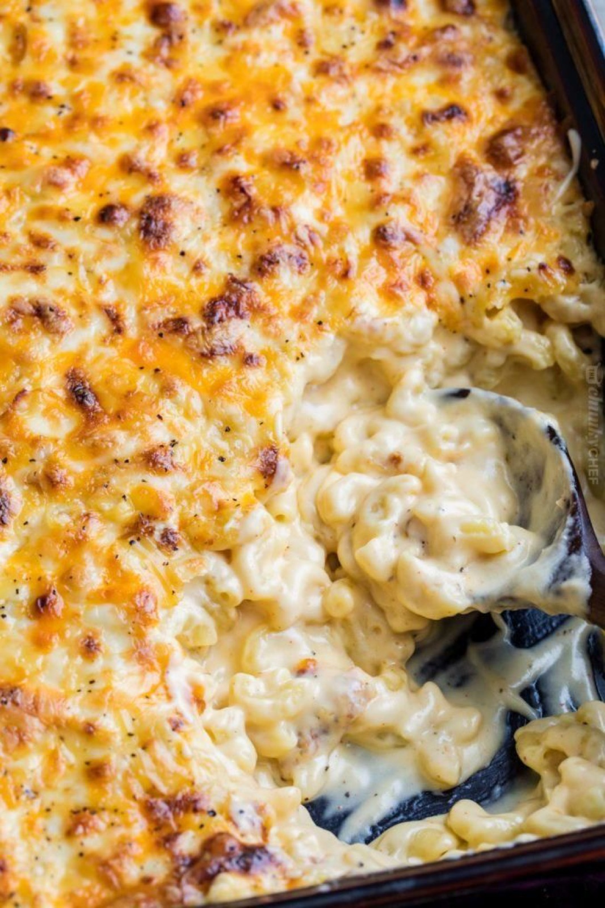
16. Brown the Mushrooms in Batches
Crowded mushrooms steam. Browned mushrooms taste of something. Cook them in a hot pan in two or three batches, and salt them only after they have color.
Cremini are enough, or add a handful of shiitake. Add garlic, a splash of white wine and cream, then toss with fettuccine and Parmesan, adding pasta water a splash at a time until the sauce clings as it does here.
This is the vegetarian main for the table. Make it last, since pasta waits for nobody.
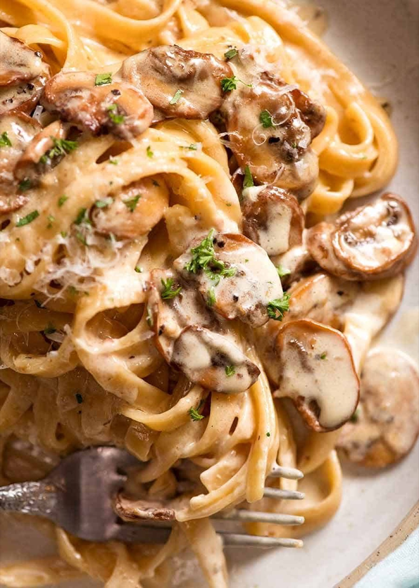
Sides That Share the Oven
17. Boil the Potatoes Before You Roast Them
Crisp roast potatoes are made in the pot, not the oven. Halve baby Yukon Golds, boil eight minutes in salted water, drain, and shake the colander hard so the edges rough up.
Toss with olive oil, garlic and rosemary and spread on a preheated pan. Roast at 425°F for 35 to 40 minutes, turning once. The rough edges are what turn into the dark, crunchy corners in this photo.
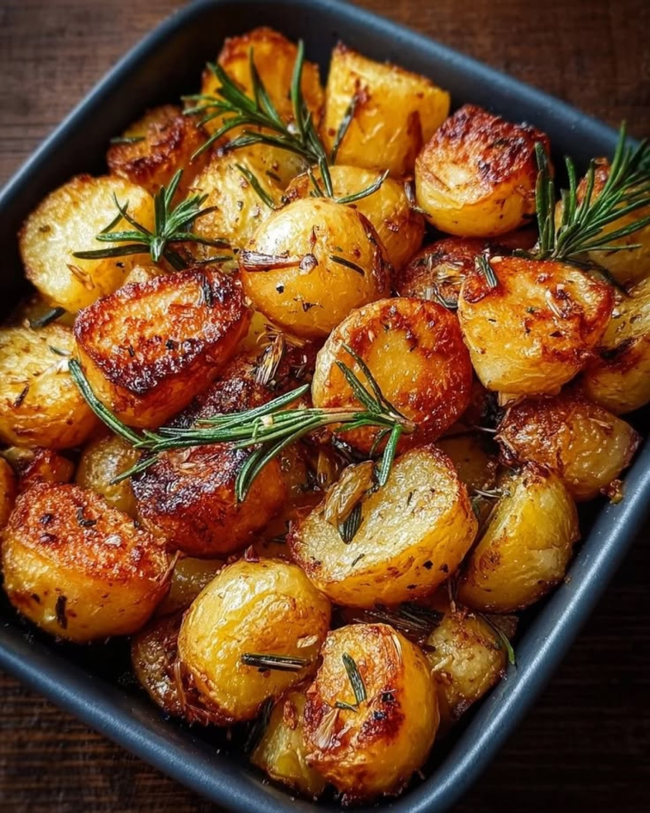
Stainless Roasting Pan with Rack, 16-Inch
Shop on Amazon18. Warm the Butter and Cream First
Cold cream into hot potatoes makes a gluey mash. Warm the butter and cream in a small pan before they go in.
Russets give the fluffiest mash and Yukon Golds the creamiest. Start them in cold salted water, boil until a fork slips in, and let them steam dry in the colander for two minutes.
Use a ricer or a masher. Never a blender or food processor, which turns the starch to paste.
Fold in chives at the end, as in this bowl, and hold the mash in a slow cooker on warm for up to two hours while the roast rests.
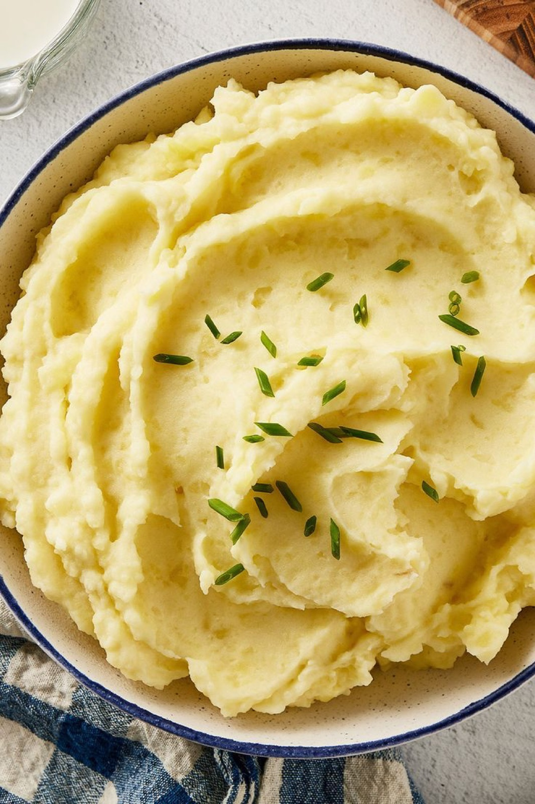
19. Add the Balsamic in the Last Five Minutes
Balsamic has sugar in it, and sugar burns long before vegetables roast. Drizzle it on in the last five minutes, not at the start.
Cut Brussels sprouts in half and keep the carrots, onion and peppers in pieces of a similar size so they finish together. Spread in a single layer and roast at 425°F for 25 to 30 minutes.
A squeeze of lemon and a little fresh thyme at the end keep it bright. This dish shares the oven with the potatoes at the same temperature.
Stainless Baking Sheet with Rack Set
Shop on AmazonOil Sprayer Mister for Cooking
Shop on Amazon20. Stand at the Broiler
Cheesy garlic bread goes from browned to burnt in about 20 seconds under a broiler. Bake at 375°F for ten minutes, switch to broil, and do not walk away.
Split a soft loaf lengthwise, spread garlic butter with parsley and Parmesan right to the edges, and top with mozzarella and cheddar. Prep it on the baking sheet a day ahead, covered, and the halves bake off as in this photo in the time the roast rests.
Serrated Bread Knife, 8-Inch
Shop on AmazonStainless Baking Sheet and Wire Rack Set
Shop on Amazon21. Dress the Salad at the Table
A dressed salad wilts in ten minutes. Bring the bowl out undressed and toss it when the plates go down.
Toss apple slices in lemon juice first so they stay pale, as these have, and toast the walnuts in a dry skillet until they smell nutty. Spinach, red lettuce, dried cranberries and crumbled goat cheese or feta finish the bowl.
Whisk olive oil, cider vinegar, honey and Dijon for the dressing. It keeps in a jar in the fridge for a week.
Wooden Salad Bowl with Servers
Shop on AmazonApple Slicer and Corer
Shop on Amazon22. Salt the Cabbage and Squeeze It
Watery coleslaw is a salting problem. Toss the shredded cabbage with a teaspoon of salt, wait 20 minutes, and squeeze out the liquid before the dressing goes near it.
Whisk mayonnaise with cider vinegar, a spoonful of sugar, celery seed and a little Dijon. Toss with the cabbage and carrot and chill at least an hour.
It is better the next day, which makes it the easiest make-ahead on this list.
A cold crunchy side next to a heavy roast and a rich mash is not a mistake. It is the thing people go back for.
KitchenAid Stainless Box Grater
Shop on AmazonLarge Porcelain Salad Bowls, Set of 2
Shop on AmazonDesserts, Most of Them Made Ahead
23. Roll the Sponge While It Is Warm
A yule log cracks when it is rolled cold. Turn the hot sponge out onto a towel dusted with cocoa, roll it up inside the towel, and let it cool rolled.
Unroll, spread with whipped cream or mousse, roll again, and cover with ganache. Drag a fork along the ganache for the bark, as this log shows, and chill a few hours before slicing.
Sugared cranberries and a little powdered sugar are enough on top. Anything taller falls off in the slicing.
Stainless Baking Sheet with Rack Set
Shop on AmazonStainless Steel Lasagna and Cake Server
Shop on Amazon24. Soak the Dates With Baking Soda
Sticky toffee pudding gets its dark, moist crumb from dates, and a pinch of baking soda in the soaking water softens them so they melt into the batter.
Fold them into a simple batter of butter, brown sugar, eggs and flour. For the sauce, simmer butter, brown sugar and cream for a few minutes, pour half over the warm pudding and bring the rest to the table with whipped cream, as in this bowl.
Ceramic Ramekins, 6 oz, Set of 6
Shop on AmazonStainless Steel Balloon Whisk, 11-Inch
Shop on Amazon25. Chill Gingerbread Dough for an Hour
Warm gingerbread dough spreads, and a spread gingerbread man loses his arms. Chill the dough at least an hour, and roll it a quarter inch thick for crisp cookies.
Bake at 350°F for eight to ten minutes and cool completely before decorating.
For icing that holds a line, mix powdered sugar with meringue powder and a little water until it stands in a stiff peak, and pipe with a small round tip.
Keep the decoration simple. White icing and a few red dots, as on these, read as gingerbread men from across the room.
Gingerbread Man Cookie Cutter Set
Shop on AmazonPiping Bags and Tips Set
Shop on Amazon26. Cool Cheesecakes in the Oven With the Door Open
Mini cheesecakes crack when they cool too fast. Turn the oven off, prop the door open and leave them inside for 30 minutes before they go to the fridge.
Press graham crumbs and melted butter into a mini cheesecake pan or lined muffin tin, beat the cream cheese smooth before adding sugar and eggs, and bake at 325°F for 18 to 20 minutes. Chill four hours.
For the hats, pipe a ring of whipped cream, press a hulled strawberry on top, and add a dot of cream to the point, as these have. Pipe the cream within an hour of serving.
Mini Springform Pans, 4-Inch
Shop on AmazonWilton 1M Open Star Piping Tip
Shop on Amazon27. Fill Pavlovas at the Last Minute
Meringue softens the moment cream touches it. Bake the nests a day ahead and keep them in an airtight tin, but fill them only when dessert is called.
Start with room-temperature egg whites and a spotless bowl, add the sugar a spoonful at a time, and bake at 225°F for an hour before leaving them in the switched-off oven for another hour. Top with cream, berries and mint, and sift powdered sugar over just before they go out, as here.
Fine Mesh Flour Sifter, 8-Inch
Shop on AmazonStainless Steel Powdered Sugar Shaker
Shop on Amazon28. Press the Sprinkles in While the Pan Is Hot
Sprinkles added to cooled brownies roll off. Press them into the surface the moment the pan comes out of the oven, and they set into the crust.
Line the pan with parchment with an overhang, so the whole slab lifts out. Use melted butter and cocoa for a fudgy texture and stop mixing as soon as the flour disappears.
Cool completely before cutting, and wipe the knife between cuts. That is how the stacked squares in this photo got their clean edges.
Nonstick 9x13 Baking Pan with Lid
Shop on AmazonChristmas Sprinkles Mix, Red and Green
Shop on Amazon29. Add the Peppermint When You Serve
Crushed candy cane dissolves into cream within half an hour. Pipe the whipped cream and scatter the peppermint at serving time, not before.
For an easy mousse, melt dark chocolate gently and fold it into whipped cream. Pipe into small clear glasses, as here, and chill at least four hours.
Small glasses are the right call. Mousse is rich, and after a roast nobody wants a big one.
These can be made on the 23rd. Cover each glass with plastic wrap so the top does not dry out.
Footed Glass Dessert Cups, Set of 6
Shop on AmazonDisposable Piping Bags with Star Tip
Shop on AmazonCommon Mistakes (and Fixes)
- Mistake: carving the roast the minute it comes out. Fix: rest it under foil for 20 minutes. The juices settle, the slices hold together, and the oven is free for the sides.
- Mistake: judging chicken by color. Fix: use an instant-read thermometer. Breasts come off at 160°F and rest to 165°F, and thighs are better at 175°F.
- Mistake: four dishes that all need the oven at 5 p.m. Fix: pick two make-ahead dishes, one stovetop or slow cooker main, and one cold side. The oven then has one job at a time.
- Mistake: dressing the salad and filling the pavlovas early. Fix: anything with cream, meringue or leaves gets finished at the table. Everything else can be done ahead.
- Mistake: leaving the buffet out all evening. Fix: cooked food gets two hours at room temperature. Put leftovers in the fridge before the dessert plates come out.
Where to Start
You do not need 29 dishes. You need one main, two sides, a starter and a dessert, and at least two of those made the day before.
Write the oven schedule on a sticky note, keep the thermometer by the stove, and put the leftovers away before the last course. Then sit down and eat the dinner you planned.